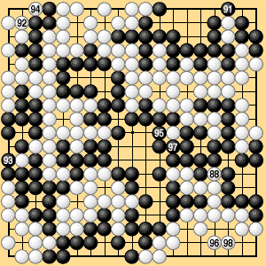

| 6.1 Normal Case (3) |
|---|
| To end the game formally according to the rules, all removable stones must be removed by actual play, so next we have the sequence from 91 to 97 in Dia. 6-1-3. White 298 passes. (Instead of handing the stone over as a prisoner, White places it inside his own territory, saying "pass.") Black also passes and the game is over. According to the rule of equal numbers of moves, since Black had the first turn after the preliminary end, he does not have to hand over a stone for his final pass. |
|  | |
|